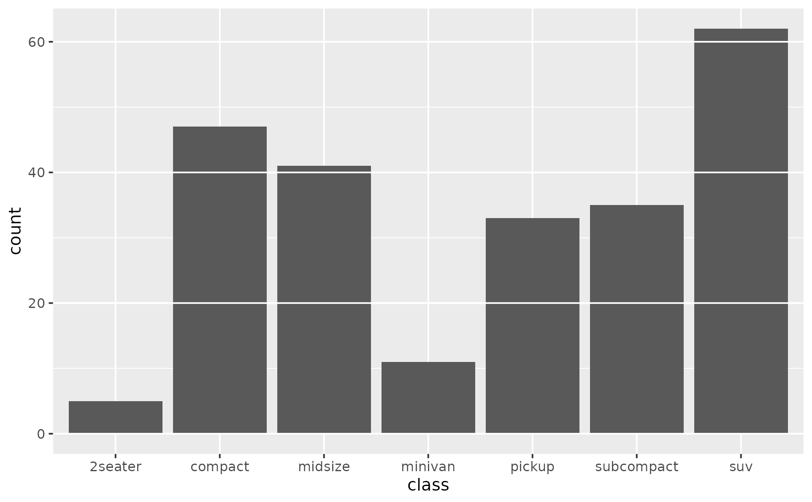
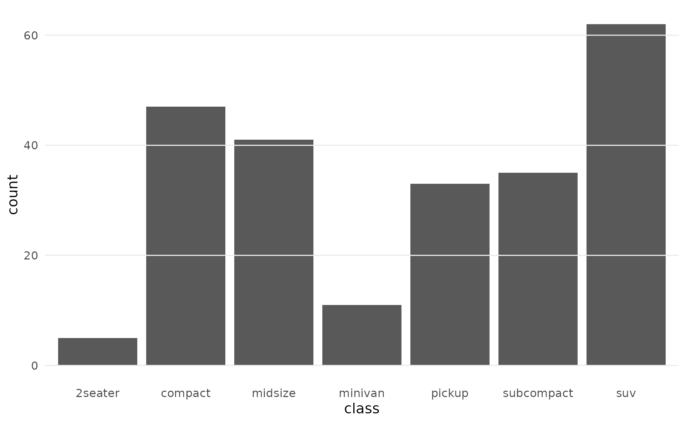
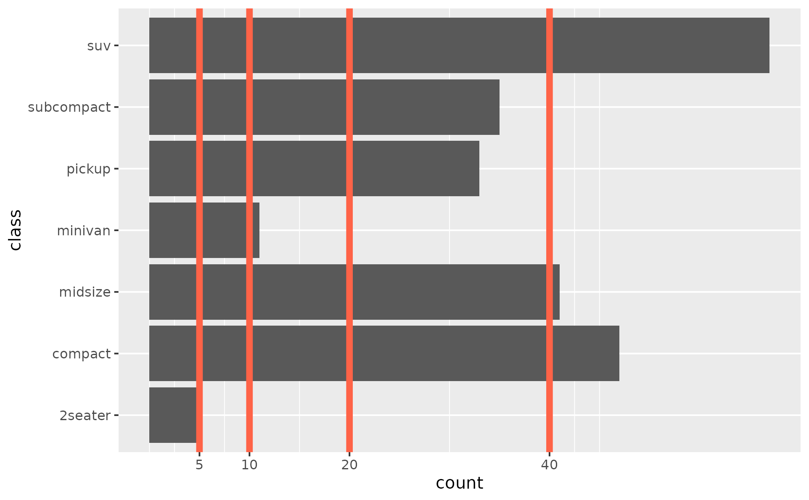
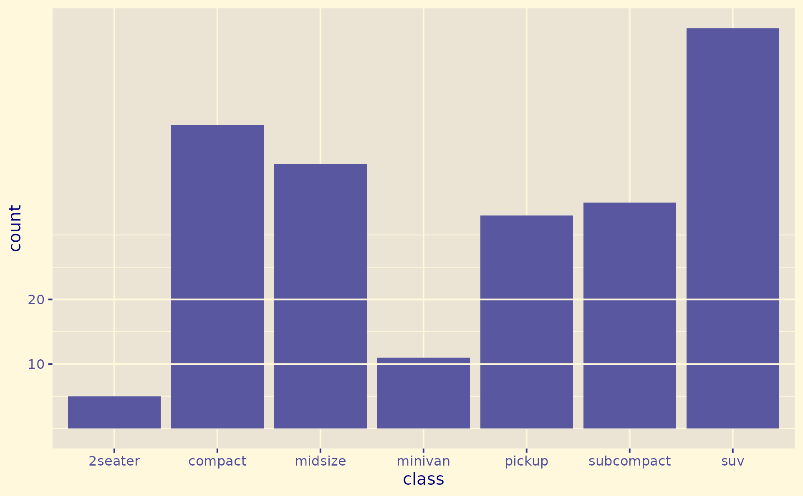
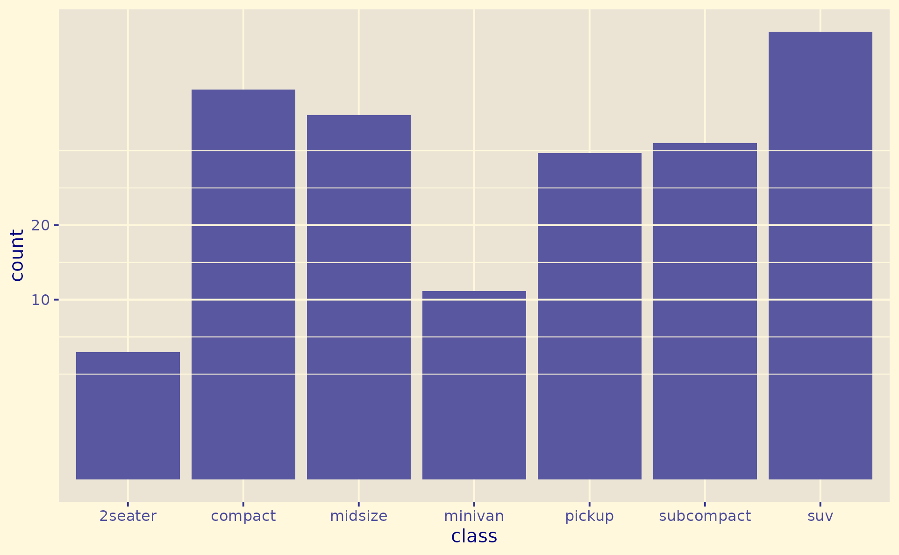

geom_gridline() draws horizontal and vertical grid lines as a regular
ggplot2 layer, so they appear above bar charts or any other geom in
your plot.
The line positions are read directly from the trained scale (via
panel_params), and the line properties are read from the theme; so
geom_gridline() always matches the grid line positions and properties
by default — but you are free to override every property, of course.
This was inspired by Observable Plot's Grid mark: https://observablehq.com/plot/marks/grid#grid-mark.
Usage
geom_gridline(
mapping = NULL,
data = NULL,
grids = "y",
lines = "major",
colour = NULL,
linewidth = NULL,
linetype = NULL,
lineend = NULL,
alpha = NA,
na.rm = FALSE,
show.legend = FALSE,
inherit.aes = FALSE,
...
)Arguments
- mapping, data
Present for ggplot2 layer-signature compatibility but unused:
geom_gridline()reads break positions from the panel scales rather than from a layer mapping or data. Passing a non-default value for either emits a warning.- grids
Character vector specifying which "grid" lines to draw:
"x","y"(default), orc("x", "y")for both.- lines
Character vector specifying which line type(s) to draw:
"major"(default),"minor", orc("major", "minor")for both.- colour, linewidth, linetype, lineend
Line aesthetics. Default
NULLinherits each property by walking ggplot2's documented theme chain:panel.grid.major.x(or.y) →panel.grid.major→panel.grid→line. Pass explicit values to override individual properties.- alpha
Opacity in
[0, 1]. DefaultNA(fully opaque).- na.rm
If
FALSE(default) missing values are silently dropped.- show.legend
Logical. Should this layer appear in the legends? Default
FALSE(grid lines rarely need a legend entry).- inherit.aes
If
FALSE, overrides the default aesthetics.- ...
Other arguments passed to
ggplot2::layer().
Value
A ggplot2::layer() object that can be added to a ggplot2::ggplot().
Line properties
By default geom_gridline() inherits each property by walking ggplot2's
documented theme chain: panel.grid.major.x (or .y) → panel.grid.major →
panel.grid → line so that by default lines look exactly like the grid would.
If you blank panel.grid the layer picks up styling from theme(line = ...).
Pass an explicit colour to override, see Examples.
Rendering order
geom_gridline() follows a specific Z-order convention to ensure
maximum visibility:
Major grid lines are always drawn on top of minor grid lines.
Y-aesthetic grid lines are drawn on top of X-aesthetic grid lines.
This means the final drawing sequence (from bottom to top) is: Minor X, Minor Y, Major X, Major Y.
See also
ggplot2::geom_hline(), ggplot2::geom_vline() for fixed
reference lines; ggplot2::theme() for controlling the underlying
panel grid.
Examples
library(ggplot2)
# Basic example - geom_gridline() is just another layer
# plotted in the order you add them to your ggplot
p <- ggplot(mpg, aes(class)) +
geom_bar()
p + geom_gridline()

# Note: geom_gridline() does not touch the theme. To draw only the layer's
# lines (no theme grid underneath), blank the panel grid yourself.
bf <- theme_grey()$panel.background@fill
p +
geom_gridline(linewidth = 0.4, colour = bf) +
theme_minimal() +
theme(panel.grid = element_blank())

# Horizontal bars: flip axes, draw gridlines atop x-grid at custom breaks
ggplot(mpg, aes(y = class)) +
geom_bar() +
geom_gridline(grids = "x", colour = "tomato", linewidth = 2) +
scale_x_continuous(breaks = c(5, 10, 20, 40))

# Line properties are inherited from theme
# their positions from the scale
p +
geom_gridline() +
scale_y_continuous(breaks = c(10, 20)) +
theme_gray(paper = "cornsilk", ink = "navy")

# When you explicitly set properties in geom_gridline
# they will overwrite theme properties
p +
geom_gridline(lines = c("major", "minor")) +
scale_y_sqrt(breaks = c(10, 20)) +
theme_gray(paper = "cornsilk", ink = "navy")
